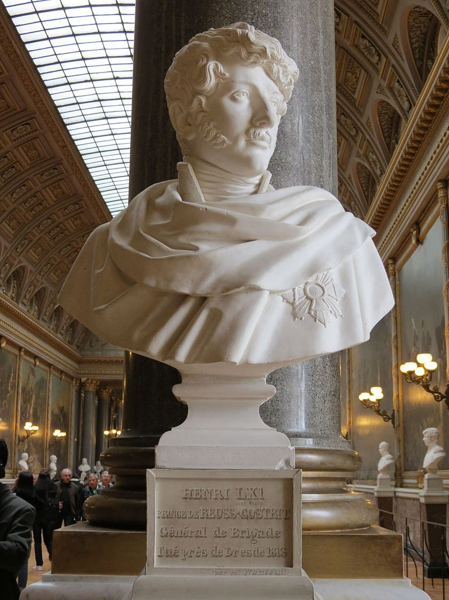
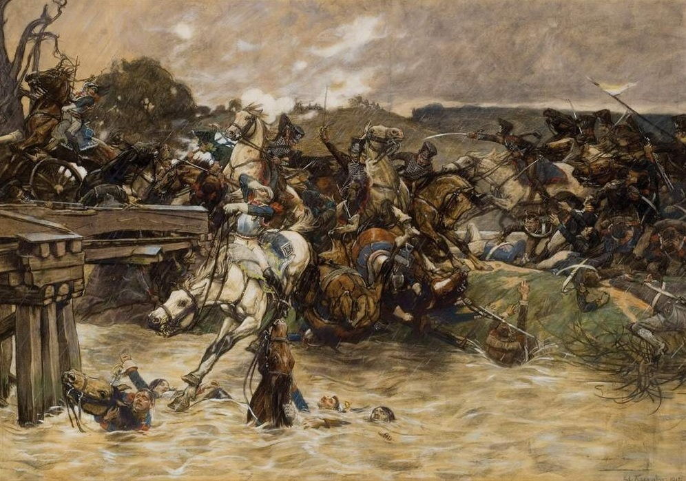
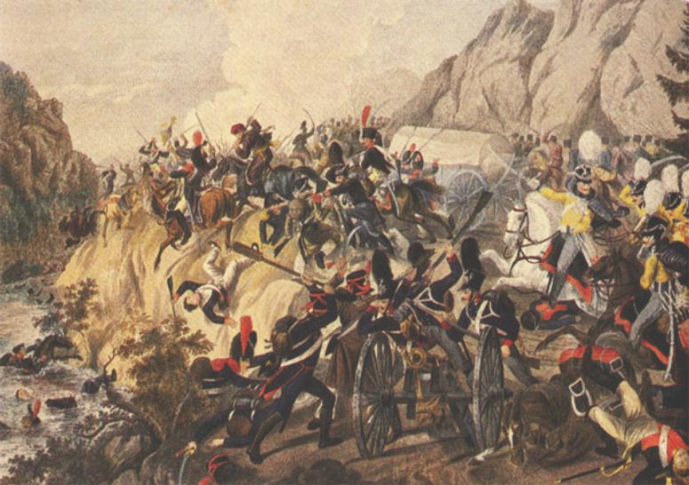
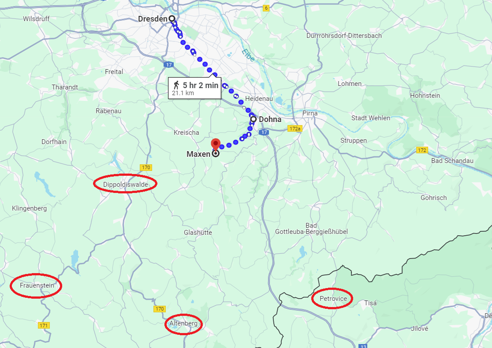

쿨름 전투 (2) - 너는 이미 혼자다
게시: 2024-05-13T06:30:36+09:00
이렇게 쫓고 쫓기는 가운데 페터스발트에 먼저 도착한 것은 오스테르만의 러시아군이었습니다. 이때 오스테르만은 임진왜란 때 문경새재를 지키는 신립 장군의 자세로 페터스발트에 배수의 진을 치고 방담을 막아야 하지 않았을까요? 그래야 했을 것 같은데 막지 않았습니다. 전해지는 바에 따르면, 평소 그렇게 용감하다고 소문났던 오스테르만은 이때만큼은 약간 이상할 정도로 겁에 질려 빨리 이 산길을 넘어 최종 목적지인 테플리츠로 가야 한다고 조바심을 냈다고 합니다. 오스테르만은 페터스발트 고갯길로 접어들기 바로 직전의 작센 마을인 헬렌스도르프(Hellensdorf)에 일부 병력을 남겨 방담의 추격을 잠시 저지했지만, 방담의 제1군단이 그 마을을 우회하여 포위하려 하자 곧 철수했고, 곧장 페터스발트를 거쳐 얼츠비어거 산맥을 넘기 시작했습니다. 이 전투에서 특기할 만한 점은 방담 휘하에서 로이스(Reuss) 보병 여단장으로 싸우고 있던 용감한 로이스 백작 하인리히 61세(Heinrich LXI. Reuß zu Köstritz)가 러시아군의 대포알을 넓적다리에 직격당하여 몇 시간 동안 고통스러워 하다 죽었다는 점 정도였습니다.

(하인리히 61세입니다. LXI라는 로마 숫자를 저는 처음 봐서 구글링해보고서야 L이 50을 뜻한다는 것을 알았습니다. 로이스(Reuß) 백작가는 신성로마제국 시대부터 내려오는 유서 깊은 명문가로서, 원래는 오스트리아편이었으나 1807년 라인연방에 가입하면서 나폴레옹 측에서 싸우게 되었고, 덕분에 로이스 가문 영지의 많은 독일 젊은이들이 아무 상관없는 스페인에서 싸우다 죽어야 했습니다. 하인리히 61세는 당시 29세의 꽃다운 청춘으로서 결혼도 하지 않은 상태였고, 백작 작위는 동생이 세습했습니다. 아무 의미 없는 족보 이야기지만 그는 훗날 영국 빅토리아 여왕과 외가쪽 친척이 됩니다.) 이렇게 되면 방담은 누워서 떡 먹는 식으로 페터스발트에 참호를 파든 토루를 쌓든 차단 진지를 구축하고 곧 몰려올 보헤미아 방면군의 패잔병들을 기다릴 수 있었습니다. 그러나 방담은 그러지 않았습니다. 각종 지도와 상황 설명을 통해 전체 그림을 볼 수 있는 후세의 우리로서는 의아한 일이지만, 생각해보면 나폴레옹의 명령은 분명히 뷔르템베르크 대공(나폴레옹은 지휘관이 오스테르만으로 바뀐 것을 모르고 있었습니다)의 병력을 밀어내고 보헤미아로 진입하여, 적의 수송대를 나포하라는 것이었습니다. 방담은 막연하게 드레스덴에서 아군이 승리했고 패퇴하는 적군의 뒤를 아군이 추격하고 있다는 것만 알고 있었을 뿐, 어느 정도 규모의 적군이 어떤 경로로 퇴각하고 있는지 전혀 알지 못했습니다. 무엇보다, 나폴레옹의 명령서에 적힌 지명은 테플리츠였지 페터스발트는 아니었습니다. 그래서 방담은 그 명령서대로 오스테르만의 뒤를 바싹 쫓아 테플리츠로 향했습니다. 실제로 방담은 헬렌스도르프에서 8월 28일 저녁에 나폴레옹에게 보고서를 보내어 '내일 테플리츠로 진격하겠다'라고 알렸고, 나폴레옹은 다음날 뮈라에게 보내는 편지에서 '방담이 북을 울리며 테플리츠로 진격한다'라며 만족스럽다는 의사를 표시했습니다. 그렇게 페터스발트 고갯길을 버려두고 보헤미아 내륙을 향하는 방담의 불안한 발걸음을 보며 후대의 우리는 바보 같은 결정이었다고 아쉬워하는 것은 당연한 일입니다. 그러나 현지의 지형을 보면 그게 옳은 결정이었다고 생각되기도 합니다. 우리는 삼국지 같은 군략소설이나 300과 같은 과장된 전쟁 영화에 익숙하기 때문에, 흔히 그런 험한 고갯길을 막고 지키면 글자 그대로 일당백(一當百), 즉 100배의 적군도 막아낼 수 있다고 생각하는 경우가 많습니다. 그러나 페터스발트는 그렇게 험한 바윗돌 사이로 나있는 좁은 산길은 아니었습니다. 생각보다 넓고 경사가 완만하기 때문에, 거기서 진을 친다고 방담이 반드시 이긴다는 보장은 없었습니다. 그런 상황에서 방담이 이기기 위해서는 무엇보다 결국 드레스덴에서 강력한 지원군이 후퇴하는 러시아-프로이센군의 뒤를 바싹 뒤쫓고 있어야 했습니다.
(하인리히 61세가 전사한 헬렌스도르프(Hellensdorf) 일대의 전경입니다. 페터스발트 일대의 지형도 이 정도로서, 사실 별로 험준한 지형으로 보이지는 않습니다.)
실제로 나폴레옹은 생-시르의 제14군단과 마르몽의 제6군단, 그리고 뮈라와 빅토르의 일부 병력까지도 동원하여 후퇴하는 보헤미아 방면군을 뒤쫓게 했습니다. 하지만 확실히 이 추격은 전력을 다한 추격이라고 할 수는 없었습니다. 일단 생-시르의 제14군단은 비록 2만 규모의 꽤 큰 군단이기는 하지만, 결코 정예 병력이 아니었기 때문에 애초에 먼 후방인 드레스덴에 배치했던 것입니다. 마르몽의 제6군단은 규모가 꽤 작은 군단으로서 1만을 겨우 넘는 규모였습니다. 뮈라의 기병대는 대부분이 몇 개월 전에야 처음 말을 타본 신병들로 구성되어 있었으므로, 낙오병들을 잡아들이는 수준 이상을 기대하기는 어려웠습니다. 이들을 다 합해도 기껏해야 4~5만에 불과했는데, 이는 당시 드레스덴에 집결했던 12만 병력의 절반도 안 되는 수준이었습니다. 나폴레옹은 왜 이렇게 심드렁한 추격전을 펼쳤을까요? 일단 지난 편에서 언급한 것처럼 개인적인 건강 문제가 컸습니다. 인간의 정신력은 무궁하다는 소리를 하는 사람들도 있지만, 실은 그 육체 수준을 벗어나기가 어렵습니다. 나폴레옹도 예외는 아니었고, 당장 비뇨기과와 호흡기 질환으로 인해 그의 정신력은 많이 무뎌진 편이었습니다. 게다가 드레스덴 전투 직전, 그리고 직후에 당도한 다른 방면군의 소식이 매우 좋지 않았습니다. 드레스덴 전투 직전 당도한 우디노의 베를린 방면군이 패전했다는 소식에 대해서는 이미 언급했습니다만, 드레스덴 전투와 같은 날인 8월 26일 벌어진 카츠바흐(Katzbach) 전투에서 막도날의 보버(Bober) 방면군이 블뤼허에게 패배했다는 소식까지 날아들었던 것입니다. 결국 연합군의 3개 방면군, 즉 북부 방면군, 슐레지엔 방면군, 그리고 보헤미아 방면군과 각각 벌인 전투에서 나폴레옹 자신이 지휘한 드레스덴 전투만 승리했을 뿐 나머지 2개 방면에서는 모두 패배한 것입니다. 특히 블뤼허에게 막도날이 패배한 것은 나폴레옹에게 꽤 심각한 우려를 가져다 주었습니다. 베르나도트의 북부 방면군은 애초에 민방위 정도에 해당하는 국민방위군 위주로 구성된 군대인데다 병력도 가장 적었고 인근 함부르크에는 다부가 버티고 있었으므로 우디노가 패전했다고 해서 당장 베르나도트가 남쪽으로 밀고 내려올 가능성은 적었습니다. 그러나 싸움닭 블뤼허가 지휘하는 슐레지엔 방면군은 이야기가 달랐습니다. 블뤼허는 언제라도 막도날의 뒤를 쫓아 드레스덴으로 밀고 들어올 가능성이 충분했습니다. 결국 나폴레옹은 일단 남쪽 보헤미아 방면군에 대한 추격보다는 북쪽과 동쪽에 대응하기로 했습니다.

(드레스덴 전투 첫날인 8월 26일, 동쪽 카츠바흐 강변에서는 막도날과 블뤼허가 격돌했습니다. 원래 막도날에게 나폴레옹이 남긴 명령은 수세적으로 대응하라는 것이었지만, 명령서를 자세히 보면 기회가 있으면 공격하라고도 되어 있었습니다. 그래서 막도날은 카츠바흐강을 건너 블뤼허를 공격했는데, 하필 그 날 폭우가 내렸습니다. 아마도 드레스덴에 26일 밤부터 폭우를 내렸던 비구름이 카츠바흐쪽에서 온 모양이었습니다. 부교와 임시 교량을 이용해 강을 건너야 했던 막도날은 불어난 강물로 다리들이 쓸려나가자 의도치 않게 병력이 분산되었고, 양측 모두 젖은 부싯돌로 인해 머스켓 소총 사격보다는 총검을 이용해 싸운 이 전투에서 결국 막도날을 패배하고 물러서야 했습니다.)

(카츠바흐 전투를 그린 다른 그림입니다. 이 전투에서 수백 명의 그랑다르메가 카츠바흐강과 나이써(Neisse)강에 빠져 익사했는데, 막도날의 병력 피해는 수천 수준으로서 괴멸적인 피해와는 거리가 있었습니다. 다만 막도날은 거의 대부분의 대포를 상실했습니다.)
실은 나폴레옹 몰락의 결정적인 순간은 방담이 페터스발트를 그대로 지나친 부분이 아니라 바로 여기, 즉 나폴레옹이 전력을 다해 보헤미아 방면군에 대한 추격을 포기한 시점이라고 판단됩니다. 애초에 베를린 진격은 꼭 필요한 작전도 아니었고, 막도날의 보버 방면군은 완전히 괴멸된 것도 아니었습니다. 아마 절대적으로 불리한 상황에서도 적의 보급창을 습격하겠다면서 먼 아르콜레 다리로 우회 작전을 펼치던 전성기 시절의 나폴레옹이었다면 다른 방면에서의 작은 패배에 아랑곳하지 않고 보헤미아로 밀고 들어갔을 것입니다. 원래 나폴레옹의 원칙은 '도시와 요새 점령에 연연하지 말고 적의 주력군을 분쇄하라, 그러면 다른 모든 문제는 스스로 해결된다'는 것이었습니다. 비록 연합군은 3개 방면군으로 구성되어 있었지만, 누가 봐도 그 중 주력군은 보헤미아 방면군이었습니다. 이때 나폴레옹이 드레스덴에 1개 군단 정도만 수비 병력으로 남겨두고 전군을 동원하여 보헤미아로 밀고 들어갔다면, 오스트리아를 제6차 대불동맹에서 이탈시킬 수도 있었을 것이고, 그러면 결국 러시아-프로이센과도 적절한 수준에서 평화 조약을 맺을 수 있었을 것입니다. 그러나 무슨 생각에서였는지, 아무튼 나폴레옹은 이미 파견한 생시르와 마르몽의 군단들 외에는 슈바르첸베르크에 대한 추격에 더 병력을 투입하지 않았습니다. 그나마 이 군단들이라도 방담의 뒤를 바싹 쫓았다면 이야기가 달라졌을 수 있습니다. 그러나 그마저도 이상하게 돌아갔습니다. 원래 생시르에게 주어진 구체적 명령은 도나(Dohna) 방면으로 후퇴하는 적군을 추격하라는 것이었고, 이 적군은 바로 클라이스트(Frederick Heinrich Kleist)의 프로이센 군단이었습니다. 그러니까 이대로 가면 결국 방담과 합류하게 되어 있었습니다. 그러나 무슨 이유에서인지 나폴레옹은 생시르에게 추가 명령서를 보냈는데 '막센(Maxen) 방면으로 후퇴하는 적을 추격하되, 적군이 어디로 향하든 그 뒤를 따르라'는 내용이었습니다. 도나에서 막센으로의 방향은 남서쪽이었고, 이는 오스트리아군의 퇴각로인 디폴디스발더로 향하는 길이었습니다. 어쩌면 나폴레옹은 디폴디스발더로 후퇴하는 오스트리아군의 움직임을 포착하고 그 쪽으로 생시르를 유도한 것일 수도 있습니다. 아무튼 결국 생시르는 클라이스트와의 접촉을 놓쳤고, 클라이스트는 그대로 남쪽으로 후퇴하여 페터스발트를 지나 방담의 뒤통수에 나타나게 됩니다. 뮈라와 마르몽도 연합군이 버리고 간 짐마차와 낙오병들 수천 명을 추가로 잡아들이다가 그 많은 포로를 드레스덴으로 호송하며 시간을 허비해버렸습니다. 그러니까 방담은 모르고 있었지만, 방담은 이미 홀몸으로 싸우게 된 것이었습니다.

(드레스덴에서 도나를 거쳐 막센으로 향하는 경로입니다. 보시다시피 막센으로 가려면 갑자기 방향을 남서쪽으로 휙 틀어야 합니다. 붉은 색 타원은 보헤미아 방면군이 퇴로로 삼았던 주요 지점들입니다.) 한편, 그 사실을 모르는 것은 오스테르만도 마찬가지였습니다. 오스테르만은 8월 28일 저녁 급보를 테플리츠로 먼저 보냈는데 그 수신인은 테플리츠에서 기다리고 있을 오스트리아 황제 프란츠 1세였습니다. 그 내용은 '강력한 프랑스군이 내 뒤를 바싹 뒤쫓아 테플리츠로 향하고 있는데, 나 혼자서는 막을 수가 없으니 속히 테플리츠에서 피하시라'라는 절망적인 내용이었습니다. 기겁을 한 프란츠 1세는 재빨리 테플리츠에서 남쪽으로 피난을 떠났습니다. 그런데 그래도 예의 바르고 의리가 있던 프란츠 1세는 허겁지겁 내빼는 와중에도 이 상황을 알리며 빨리 피하라는 편지를 누군가에게 보냈습니다. 그 수신인은 과연 누구였을까요? Source : The Life of Napoleon Bonaparte, by William Milligan Sloane Napoleon and the Struggle for Germany, by Leggiere, Michael V With Napoleon's Guns by Colonel Jean-Nicolas-Auguste Noël https://www.pinterest.co.uk/pin/143059725653536439/ https://napoleon-monuments.eu/Napoleon1er/Vandamme.htm https://alchetron.com/Battle-of-Kulm http://napoleonistyka.atspace.com/BATTLE_OF_DRESDEN.htm https://en.wikipedia.org/wiki/Battle_of_Kulm https://en.wikipedia.org/wiki/Teplice https://www.wikidata.org/wiki/Q1598133 https://en.wikipedia.org/wiki/Battle_of_the_Katzbach